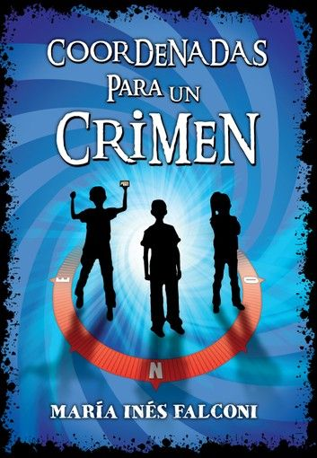
Coordenadas para un crimen
María Inés Falconi
Me llamo Luciano, mundialmente conocido como Vashito, presentarme en cuatro líneas sería algo difícil, pero podría decir que soy programador, a veces instalo aires acondicionados, cámaras y básicamente hago casi cualquier cosa que se me antoje, que no significa que las haga bien jaja.
Mi perfil como desarrollador es tirando a BackEnd, fue lo que me gustó en su momento y lo que a más le he metido horas, tengo algún que otro proyecto por ahí. El FrontEnd no es lo mío, así que en ese aspecto me ayudo bastante con cualquier agente IA.
A lo largo de mi carrera profesional he desarrollado y perfeccionando mis habilidades en diversos campos.
Por suerte tengo unos padres que me enseñaron a hacer de todo, y aunque no voy a entrar en detalles, hablaré de lo más importante
Febrero 2017 - Diciembre 2019
Locura lo que fue el bachillerato, conocí muchas personas y de ahí salió uno de mis mejores amigos. Épico. Fue acá dónde descubrí la programación y por lo que me decidí estudiarla.
Marzo 2021 - Julio 2025
Locura fue. Al principio me encantó, luego la detesté y al final no estuvo tan mal. Está bien. Eternamente agradecido con todos los que formaron parte de eso, desde Impulso hasta Brechner y todos su allegados.
Mayo 2018 - Diciembre 2018
Trabajo muy bueno, era donde estudiaba y antes de horario, la verdad, me vino de perlas y lo disfruté mucho.
Ni idea, unos años atrás - Actualidad
Locura, de mis favoritos, conozco a muchos animales y he visto lugares muy lindos, mis diceces.
Setiembre 2026 - Actualidad
Locura, me gusta mucho. El ambiente en la oficina es muy bueno y son todas personas maravillosas.
Estos son algunos de ellos. Al tocarlos sale información detallada.

Evidentemente no es mía, pero la adoro con mi vida, perra preciosa y juguetona y gorda lechón la amo.

La gata murciélago más linda del planeta, juguetona y mimosa a veces. Le encanta masticar puertas.

Qué decir de Catungo, su pérdida me va a doler toda la vida. Era un gato de mierda, sí, pero era mi compañero fiel. Era odioso, arisco, meaba todo, nadie lo quería, ni las gatas y encima vivía peleando. Pero era mi gatito. Todavía me culpo un poco de su pérdida, pero estoy aprendiendo a quedarme con lo mejor. Un beso al infierno, mi Catungo, mi gatito hermoso.

Mi Rey, este perro me pertenece más a mí que a su dueña, yo lo quiero más, y aunque él no a mí, eso no quita que sea el ser que más lo idolatre. Perro puto.

Esperancita querida, tiene como 300 años y sigue moviéndose como si tuviera seis meses jajaja. Mucha suerte acercándote, pero cuando se deja acariciar es la gata más mimosa del mundo.

Nunca terminé de ponerte nombre como tal, no sabía cuál sería el indicado. Ahora entiendo que eras como un ángel, silenciosa, juguetona y mimosa. Únicamente buscabas amor y espero que nuestra corta amistad te haya dado todo ese calor que nadie te dio antes. Un beso al cielo, mi gatita hermosa.

Siento mucho no haberte podido ayudar, lo siento de verdad. Espero que tus últimos momentos hayan sido un poco mejor con mi compañia. Beso al cielo, preciosa.

El hijo de perra jajaja. Te quiero mucho, fuiste mi gran compañero mucho tiempo. Besito al cielo, precioso.

Gata de mierda, no me quiere, digo, no me quiere ninguna, pero ella menos. Doy la vida por vos y te chupa un huevo, solo me buscás cuando querés comida. Igual te amo y te adoro, gata gorda hermosa.

Mi señor, el rey de la caquita en forma de bolitas de chocolate. Incluso hoy día sigo encontrando tus heces, cagaste por todos lados, gracias. Besito al cielo.
Seleccioná una portada para ver mi valoración y comentario.

María Inés Falconi

Heather Morris
Isabel Allende
C. J. Tudor
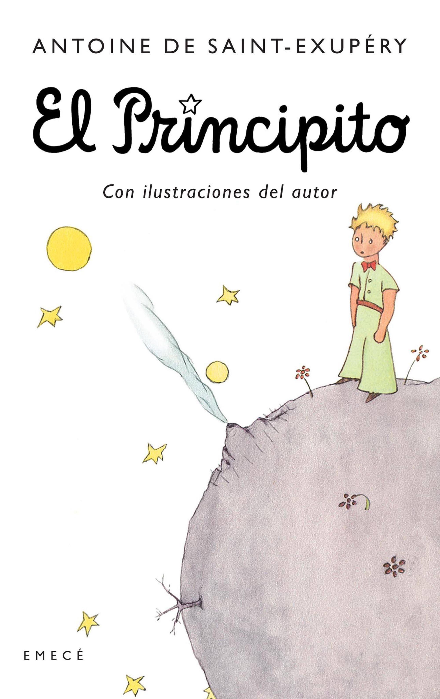
Antoine de Saint-Exupéry
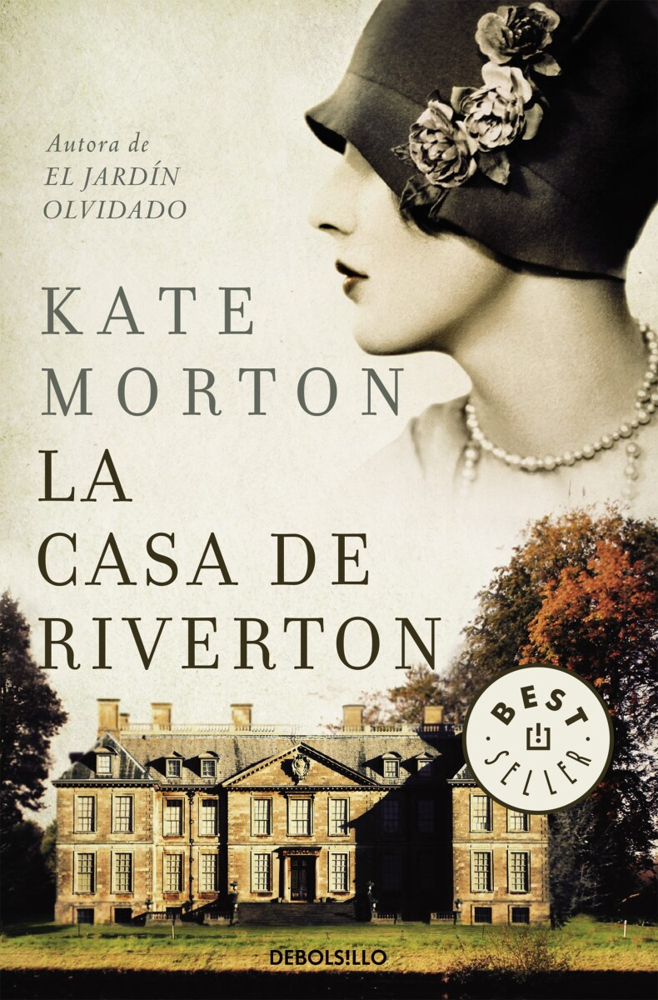
Kate Morton
Santa Montefiore
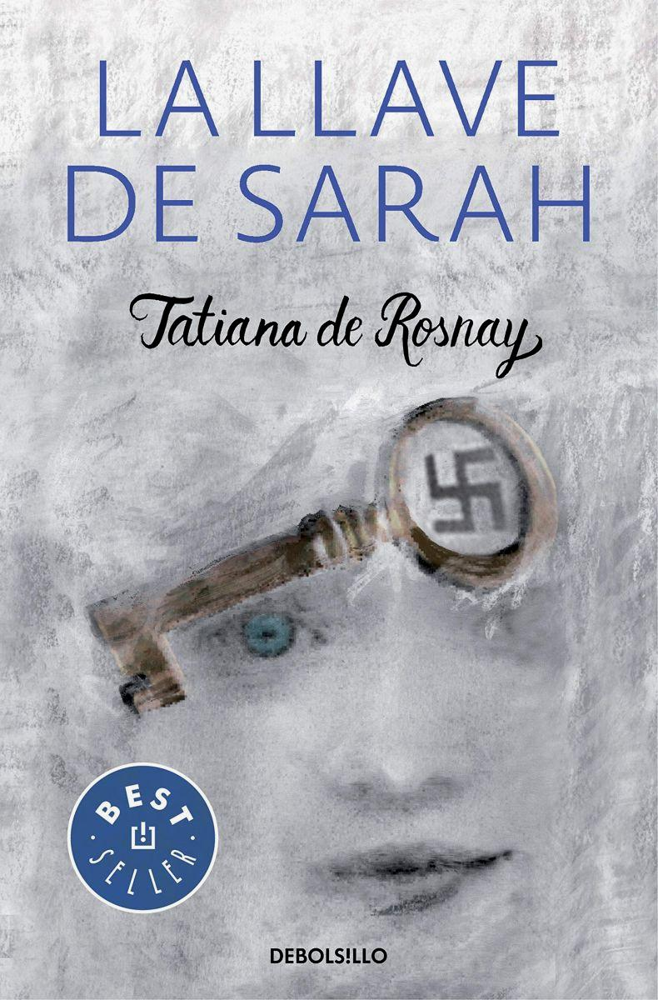
Tatiana de Rosnay
Dinah Jefferies
Audrey Niffenegger
Gabriel Rolón

Heather Morris
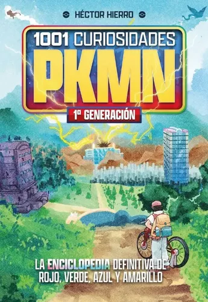
Héctor Hierro
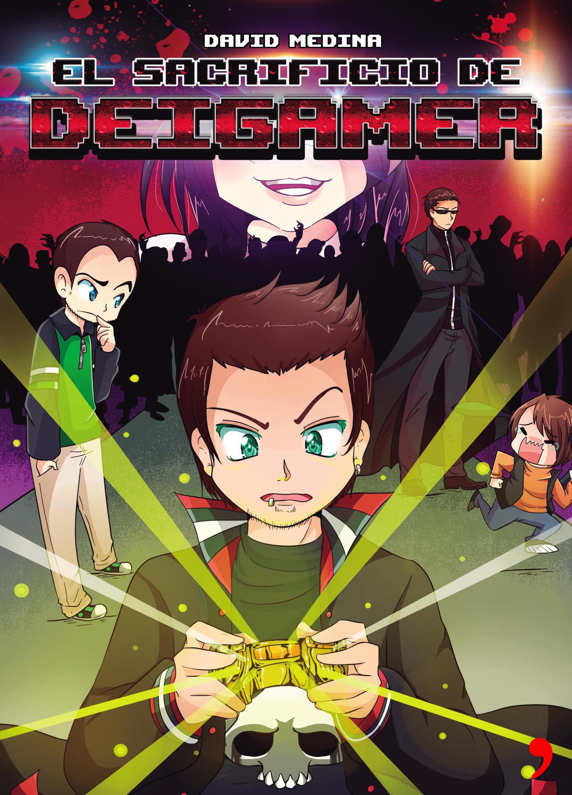
David Medina
Verdaderamente LOCURA la de horas que he pasado acá.
He recopilado algunas opiniones sobre mi trabajo y dedicación.
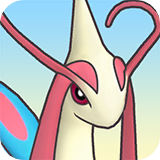
opiniónnnnnnnnnnnnnnnnnnnnnnnnnnnnnnnnnnnnnnn
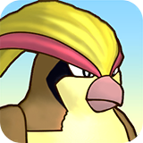
Mi opinión es mía y me la guardo para mí. Yo creo que Vashito es un toca niño, que cuanto mas chicos son más le excita. ¿Vos pensás que Vashito es un toca niño? Será menos toca niños que los demás entonces.
Un gran amigo, empresario, laburador, genio, inteligente, incomprendido y un magnate Jeffrey Epstein. Vashito un buen pibe.
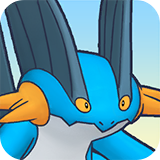
Creo firmemente que Vashito es un tipazo, buena gente. Pero habría que prestar atención a su amistad con Epstein.
Gracias por sus palabras tan bonitas, gente. Si me defienden en un juicio por tener la música alta seguro me dan pena de muerte.
Desde que supe que su ídolo era Deigamer y se vestía igual a él, no lo dejo acercarse a mis hijos 5 hectáreas a la redonda. ¡Mantengan alejados a sus niños de este tipo!
Who tf is Vashito.
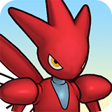
Vashito es un genio, un gran ejemplo a seguir y sobre todo una excelente persona. Lo que lo hace perfecto es que es adicto a la pasta base y a acosar menores. MI ÍDOLO. ❤️
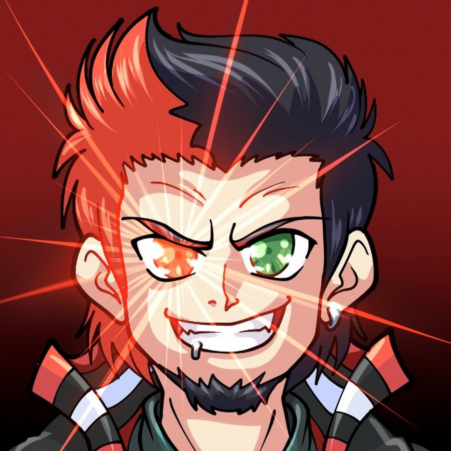
Hacer este vídeo a mí mucho me llevó, grabación, edición, renderizado y diseño.
No lo hagas, pero en caso de, acá están mis datos de contacto. No me llames, no me escribas, no me mandes mails, no me busques, no me hables, no me digas nada. No quiero saber nada de vos. No quiero que me contactes. No quiero que me busques. No quiero que me hables.
Trabajando todo el día
lucianomellopaz@gmail.com
(+598) 95 389 155